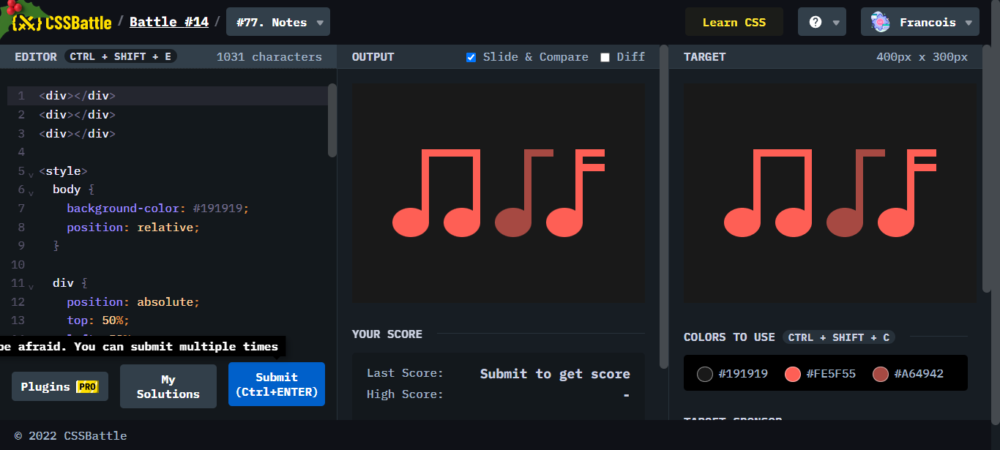
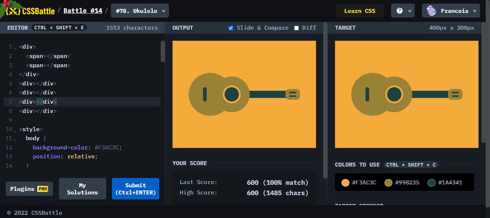
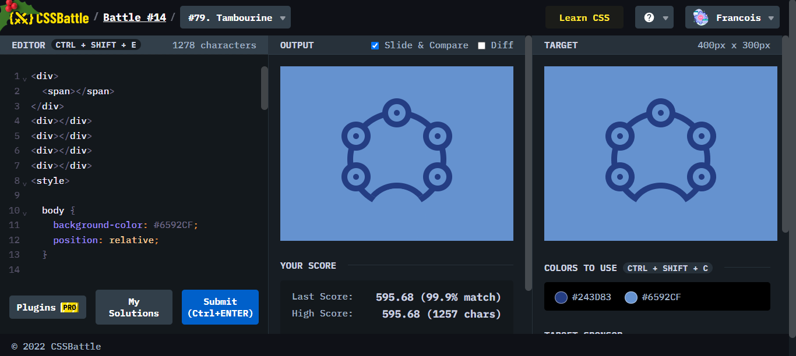
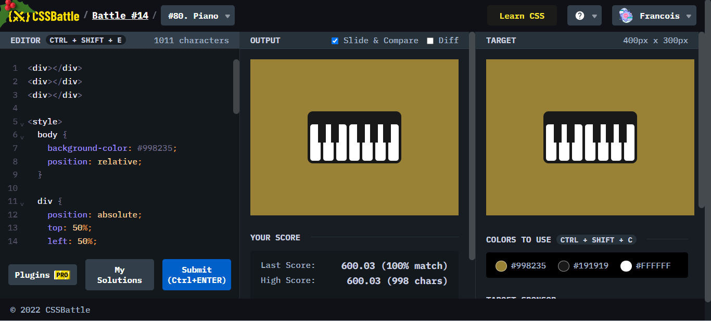

Battle.14では、4問が出題されていて、初見で分かりにくいかつ、音楽関連でそろえてきました。難易度を見てみましょう。

ポイント
box-shadowの多用で解決、円、線、共に使うとよかった。

部品をそれぞれ作って、配置するだけだった。それほど難しくはない。

99.9% match で少しの微差だと思うため通過。考え方は間違っていない。

鍵盤をすべてbox-shadowを使うとすんなりできた。
実際に書いたものはこちら！